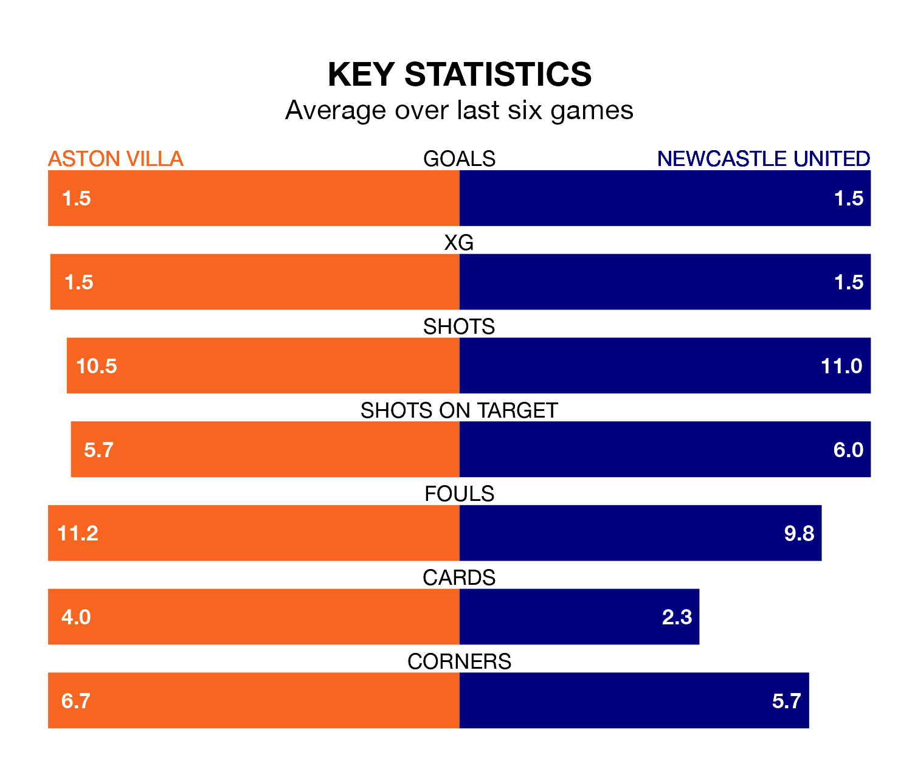

Newcastle United make the journey to Villa Park to play Aston Villa on late Tuesday looking to pick up points to end their four-game losing streak.
Newcastle's struggles have left them with just three points from their last six Premier League matches, while their opponents have earned 11 from a possible 18.
With 43 goals in 21 games so far this season, Villa are the league's joint-third-highest scorers with 2.0 goals per game. And they are conceding fewer than average, letting in 27 goals at a rate of 1.3 per game.
Newcastle are also above average scorers, with 2.0 goals per game, compared to a league average of 1.5. They have conceded 1.5 goals per game.
With Nick Pope between the sticks, United can rely on one of the league's safest pair of hands. He has kept six clean sheets in his 14 appearances this season, and only one other 'keeper – Everton's Jordan Pickford – has been able to prevent the opposition scoring on more occasions in the Premier League.
In the Villa's net, Emiliano Martínez has five clean sheets in 20 games. He has conceded a goal every 72 minutes, 30% more often than the 97 minutes between goals for Pope.
The hosts are third in the table after 21 games, of which they have won 13 and drawn four, earning 43 points.
The Magpies are seven places behind Villa in 10th, with nine wins and two draws putting them on 29 points.
In the last 10 years, Villa and Newcastle have played each other on 17 occasions. Villa won four of them, Newcastle six, and they drew seven times.
On average, the Villa scored 1.0 goal and the Magpies 1.2 in those matches.
Their last meeting was on August 12, when Newcastle won 5-1 at home.
Villa's last match was on January 14, a 0-0 draw against Everton.
Newcastle lost 3-2 against Manchester City last time out, on January 13, with Alexander Isak and Anthony Gordon on the scoresheet.
Updated: 06:13 (UTC), 18/01/24